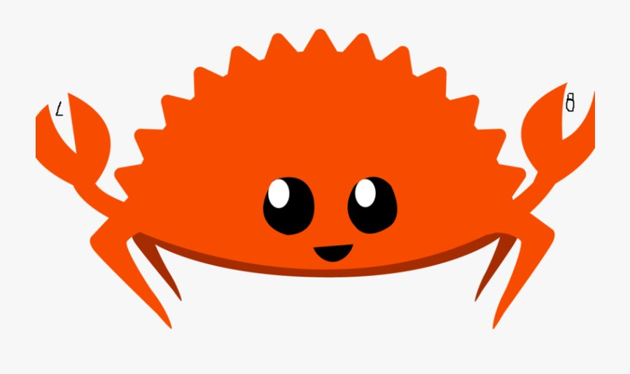

Rust, performans, güvenilirlik ve üretkenliği bir arada sunan bir sistem programlama dilidir. Bellek güvenliğini çöp toplayıcı olmadan garanti eder. Sipahi çekirdeği Rust ile yazılıyor — işte nedeni.
Rust'ın bellek güvenliğinin sırrı üç basit kurala dayanır: her değerin tek bir sahibi vardır, aynı anda ya bir değiştirilebilir referans ya da birden fazla salt okunur referans olabilir, ve referanslar her zaman geçerli olmalıdır.
C++'da bu kod çalışır — iki pointer aynı belleğe işaret eder, biri serbest bırakılınca diğeri "dangling pointer" olur. Rust'ta derleme zamanında yakalanır — program çalışmadan önce hata bulunur. Sıfır runtime maliyeti.
| Özellik | Rust 🦀 | C | C++ | Go | Python |
|---|---|---|---|---|---|
| Bellek Güvenliği | Compile-time ✓ | Manuel ✗ | Manuel ✗ | GC ile ✓ | GC ile ✓ |
| Data Race Koruması | Compile-time ✓ | Yok ✗ | Yok ✗ | Kısmi ~ | GIL ile ✓ |
| Bare-Metal Desteği | no_std ✓ | ✓ | Kısmi ~ | ✗ | ✗ |
| Performans | C seviyesi | Referans | C seviyesi | Yakın | Yavaş |
| Garbage Collector | Yok (gerekmiyor) | Yok | Yok | Var | Var |
| Formal Doğrulama | Kani ✓ | CBMC ~ | Zor ~ | Sınırlı ✗ | ✗ |
| RTOS / Kernel Yazımı | İdeal ✓ | Geleneksel ✓ | Mümkün ~ | Uygun değil ✗ | ✗ |
Çünkü bir hava savunma sisteminde "undefined behavior" lüksü yoktur.
Savaş Senaryosunu İzle →